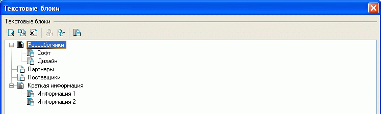
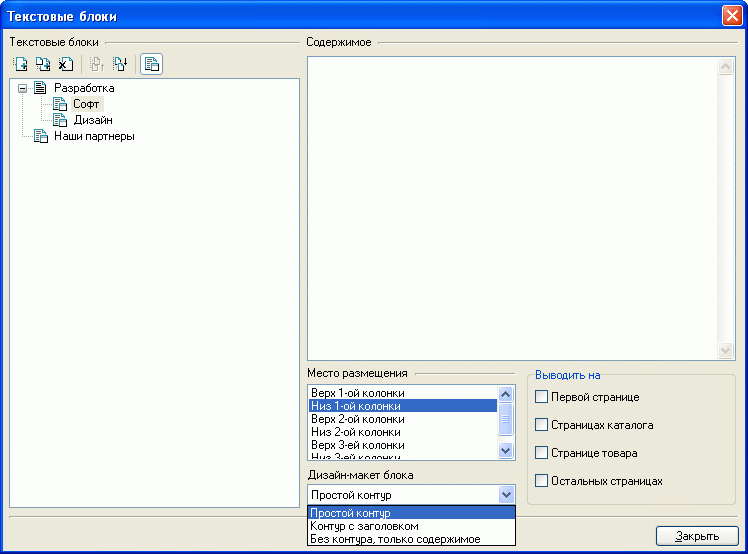
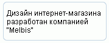
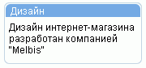

Для компактного вывода на страницах магазина сопутствующей информации, в том числе баннеров и счетчиков, предназначены текстовые блоки. Эти блоки предварительно необходимо создать.
В левой части окна "Текстовые блоки", вызываемого из главного окна "Настройки - Текстовые блоки", отображается дерево текстовых блоков. Текстовые блоки могут группироваться в разделы. Разделы и текстовые блоки можно добавлять, удалять, переименовывать, группировать, сортировать.

Для обозначения того, чем - разделом или текстовым блоком - является вновь созданный объект, служит кнопка , расположенная над деревом текстовых блоков. Раздел не имеет своих значений, а только группирует схожие подразделы или текстовые блоки. Сам текстовый блок имеет содержимое (текст, баннерный код или код счетчика) и ряд параметров, определяющих место его размещения, на страницах какого типа выводить этот блок и в каком стиле отображать (дизайн-макет блока):

Дополнительные места размещения и дизайн макеты текстовых блоков могут быть определены в редакторе дизайн-макетов и мест размещения данных.
Дерево разделов служит для логического упорядочения текстовых блоков и на страницах магазина отображаться не будет.
Например, для указанных выше настроек, внизу первой колонки на первой странице появится текстовый блок (дизайн форм может отличаться от приведенного):

Или в случае выбора стиля оформления "Контур с заголовком" в заголовок текстового блока будет вынесено его название:

Альтернативой текстовому блоку является создание рекламной группы без товаров.